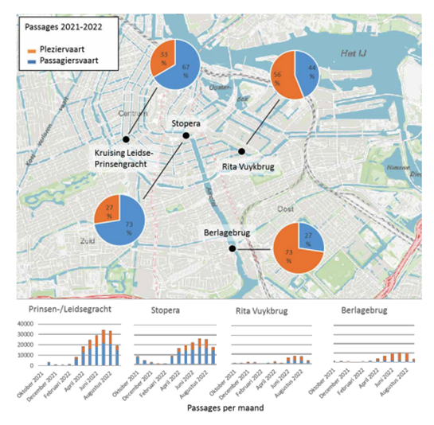

ASSIGNMENT 2
Week 1.3 - Energy
For organizing a successful and sustainable Paralympics events, the municipality of Amsterdam pays great attention to the air pollution effects of the canal- and support boats and the overall energy costs. We have reviewed several datasets that provided information on these aspects.
On this webpage we will provide information on the research background, methodology and used datasets for Assignment 2. In the Jupyter source file ‘Assignment2_WB, which can be found in the Assignment 2 Zip File on GitHub, we have structured our code and Python script. These Python codes can be run and reproduced in the Jupyter notebook.
Canal boats
To assess the number of canal boats that are currently in use and diesel/fossil fuel driven and how many boats are electrical driven, we reviewed the Implementation Agenda for Emission-Free Mobility Amsterdam 2023-2026 from the Gemeente Amsterdam as a downloaded pdf file. It should be noted that this report believes that passenger and pleasure boating are the main types of water transport in the canals. And therefore, we have referred to passenger and pleasure boats as canal boats.
This written report has based their data on passenger and pleasure boating on the textual Grachtenmonitor 2022 rapport. According to the Implementation Agenda, there are around 550 passenger boats, from which more than 70% is emission-free, which results in about 385 emission-free. Currently, there are about 7000 pleasure boats registered with a passage vignette in Amsterdam. In the period between January - October 2022, 15% of the pleasure boats was emission-free in the central area, which results in 1050 emission-free pleasure boats (Gemeente Amsterdam, 2022a).
However, it should be noted that these numbers are estimations and that it is difficult to provide an overview of all canal boats in Amsterdam, as for this research only registered boats with a passage vignette were included. There are for instance, also a lot of boats who have a vignette for a daily passage. Only for passenger/pleasure boats this number is already 10280, from which no information is provided about the number of boats that are electrical driven (Gemeente Amsterdam, 2022a). Additionally, when data is considered from a study on the use of Amsterdam inland water from Mobycon (2022), on behalf of the municipality of Amsterdam, it can be concluded that the number of boats in the canals is much higher than the numbers taken up in the Grachtenmonitor 2022. In August 2022, 49505 boats were observed at several counting locations in the Amsterdam canals (See Table 2). Nevertheless, this data only provides numbers for the month in August 2022 and is therefore not very reliable. Therefore, according to these datasets no definitive numbers can be given about the number of diesel/fossil fuel boats and boats that are electrical driven. However, the Grachtenmonitor 2022 supplies indications about the number of diesel/fossil fuels vs. electrical driven boats for a subgroup of Amsterdam canal boats and therefore we have used this data for our further research.
Peak times of canal boats
To see if there are peak times for the canal boats, reviewed data from the Grachtenmonitor 2022. The following figures provide data on the numbers of passenger and pleasure boats with passage vignettes during different months (Figure 1). different days in the week (Figure 2), and during different hours in the day (Figure 3).
 Figure 1. Passages of passenger and pleasure boats between October 2021 and September 2022 at 4 locations in Amsterdam (Gemeente Amsterdam, 2022a)